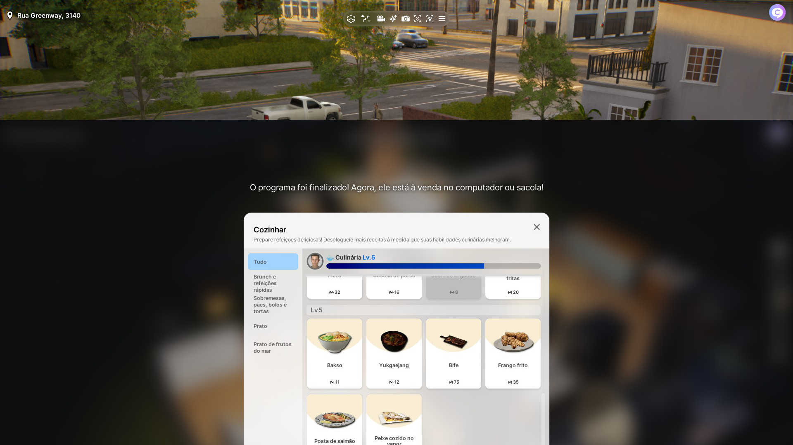
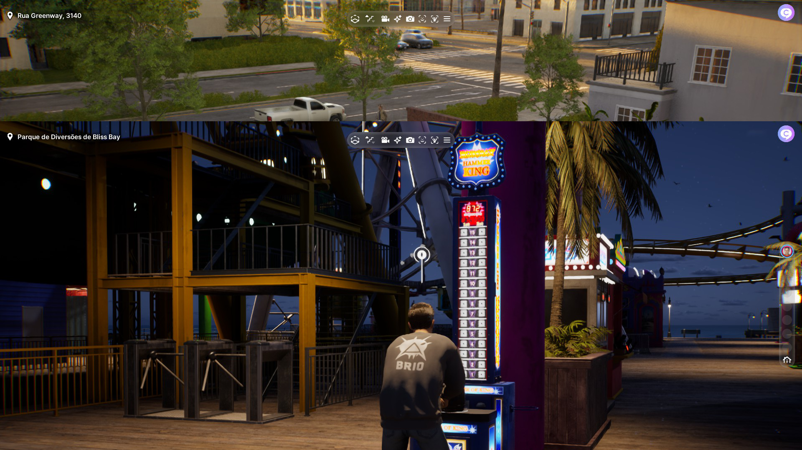

inZOI
Desenvolvedor(a): inZOI Studio
Publicadora: Krafton
Gênero: Simulador/Estrategia
Engine: Unreal Engine 5
Plataformas: Microsoft Windows
Data de Lançamento: 28/03/2025
Introdução
Sinopse: inZOI é um jogo de simulação da vida em que os jogadores assumem o papel de criadores, moldando o mundo conforme imaginam e testemunhando as diversas histórias que se desenrolam. Com essa experiência imersiva, queremos inspirar os jogadores a apreciar uma jornada cheia de significados a cada passo: a vida.
Sou um grande fã de The Sims e seus simuladores. Joguei todas as edições e várias DLCs, e sempre quis melhorias para um possível The Sims 5 (afinal, The Sims 4 é um jogo de 2014). A partir de 2020, diversos projetos de simuladores de vida começaram a surgir, mas muitos foram cancelados. No entanto, pelo visto, o jogo da empresa coreana Krafton foi o primeiro a tentar competir diretamente com a EA Games.
Atualmente, inZOI ainda está em acesso antecipado, e isso é perceptível em várias questões. Por exemplo, a imagem abaixo demonstra que ainda não há todas as refeições disponíveis. O jogo foi lançado antecipadamente para obter apoio do público e continuar seu desenvolvimento.
Mecânica
As mecânicas de inZOI são boas, mas o jogo ainda está incompleto. Algumas novidades positivas em relação ao concorrente incluem a possibilidade de andar livremente com o próprio personagem e explorar o mundo aberto quando quiser. O jogo permite dirigir carros, utilizar ônibus/metrô ou simplesmente caminhar até o destino desejado.
Outro ponto interessante é o design do personagem. O jogador pode criar suas próprias roupas e usar um sistema que combina IA + Canvas para gerar o próprio rosto no jogo (infelizmente, esse recurso está disponível apenas para dispositivos iOS). Caso tenha uma impressora 3D, também é possível importar objetos do mundo real para dentro do jogo.
O sistema de karma é um diferencial: ele afeta a cidade com base nas ações do jogador. Se houver muito karma negativo, a criminalidade pode aumentar, por exemplo. No entanto, esse sistema ainda parece incompleto e poderia ser melhor explorado.
Apesar desses aspectos positivos, há falta de conteúdo. Algumas questões precisam de melhorias, como:
- Mais pratos na culinária;
- Um sistema aprimorado de comunicação entre os cidadãos;
- Possibilidade de acompanhar a rotina de trabalho dos NPCs;
- Melhorias na garagem;
- Mais objetos interativos.
Ainda assim, o jogo é jogável e possui potencial para crescimento.
Gráficos
Este é, sem dúvida, um dos pontos fortes do jogo. inZOI utiliza a Unreal Engine 5 e apresenta visuais impressionantes. Os personagens são visualmente superiores ao concorrente. No entanto, esse motor gráfico também torna o jogo menos acessível, pois exige um hardware mais potente. Por exemplo, ele demanda no mínimo uma placa de vídeo da segunda geração da NVIDIA. No meu caso, com uma RTX 4060, consegui rodar o jogo a 60 FPS sem problemas.

Trilha Sonora
A trilha sonora é bem comum e não apresenta nada muito marcante. Há algumas músicas para tocar no rádio, mas os personagens falam apenas um dialeto fictício, sem uma linguagem compreensível.
História
O jogo não possui uma história propriamente dita, mas podemos avaliar sua "quest" principal. Como mencionei anteriormente, ele ainda precisa de ajustes, principalmente no balanceamento do ritmo de vida. Atualmente, são apenas três dias de trabalho por semana, e nem todos os empregos exigem a presença do jogador no local, o que tira um pouco da imersão.
Otimização
A otimização do jogo é razoável. Há suporte para legendas em português do Brasil, e ele roda de forma satisfatória na maior parte do tempo. O que reduz um pouco a nota é a incerteza sobre o futuro conteúdo do jogo. Haverá novas atualizações ou ele seguirá o modelo do The Sims, cobrando por DLCs? Os desenvolvedores garantiram que o primeiro ano de DLCs será gratuito, mas e depois?
Veredito Final
inZOI é um simulador de vida promissor que tenta competir com The Sims. Seu grande diferencial são os gráficos impressionantes da Unreal Engine 5 e a maior liberdade de exploração no mundo aberto. As mecânicas trazem ideias inovadoras, como o sistema de karma e a customização avançada dos personagens.
Entretanto, ele ainda está em acesso antecipado e carece de conteúdo. Aspectos como interações sociais, rotina de trabalho e variedade de itens precisam ser aprimorados para tornar a experiência mais completa.
Se os desenvolvedores mantiverem o compromisso com atualizações frequentes e um modelo justo de monetização, inZOI pode se tornar um forte concorrente no gênero de simulação da vida.
Nota: 81
Voltar para a página principal